← HomeFunding calls →Academic positions →Latest Science →DESIGN, REPORTING & APPRAISAL
Clinical research methodology, made practical
The evidence pyramid
Study designs from the strongest to the weakest evidence for a clinical question. The wavy borders are a reminder that designs overlap: a well-run study on a lower level can beat a poor one above it. Tap a level for its notes and named variants.
Which design is my study?
Reviews and meta-analyses are not classified this way: they pool studies that already exist.
Tools by study design
Official tools to plan, report and appraise each study design, in the order of the evidence pyramid. Linked names open the official page or paper; the others are methods to plan for.Official tools to draft the protocol, report it properly and appraise the evidence. Each level of the pyramid above lists the tools for its designs.
| Study design | Design & protocol | Reporting | Critical appraisal |
|---|---|---|---|
| 1Meta-analysis and guidelinesNotes in the pyramid ↑ | |||
| Pairwise meta-analysis | |||
| Network meta-analysis (NMA) | |||
| Individual patient data (IPD) meta-analysis | |||
| Clinical practice guideline | |||
| 2Systematic reviewNotes in the pyramid ↑ | |||
| Systematic review | |||
| Scoping review |
| ||
| 3Randomised controlled trial (RCT)Notes in the pyramid ↑ | |||
| Parallel-group RCT |
| ||
| Crossover RCT |
| ||
| Cluster RCT |
| ||
| Stepped-wedge RCT |
| ||
| Factorial RCT |
| ||
| Platform / adaptive trial |
| ||
| Non-inferiority / equivalence trial |
| ||
| Pragmatic RCT |
| ||
| Zelen design (randomised consent) |
| ||
| cmRCT (trials within cohorts) |
| ||
| 4Non-randomised controlled trialNotes in the pyramid ↑ | |||
| Quasi-experimental study |
| ||
| Matched controlled study |
| ||
| Historically controlled trial |
| ||
| Geographically controlled study |
| ||
| 5Uncontrolled trialNotes in the pyramid ↑ | |||
| Single-arm trial |
| ||
| Pre-post (before-after) study |
| ||
| Dose-escalation trial |
| ||
| 6Cohort studyNotes in the pyramid ↑ | |||
| Cohort study |
| ||
| Registry-based cohort |
| ||
| 7Cross-sectional studyNotes in the pyramid ↑ | |||
| Analytical cross-sectional study |
| ||
| Diagnostic accuracy study |
| ||
| 8Case-control studyNotes in the pyramid ↑ | |||
| Case-control study |
| ||
| 9Case seriesNotes in the pyramid ↑ | |||
| Case series |
| ||
| 10Case reportNotes in the pyramid ↑ | |||
| Case report |
| ||
| 11Editorials, opinions and ideasNotes in the pyramid ↑ | |||
| Narrative review |
| ||
| 12Animal researchNotes in the pyramid ↑ | |||
| In vivo efficacy study | |||
| 13In vitro researchNotes in the pyramid ↑ | |||
| Cell-based assay |
| ||
| MOutside the pyramid · measurement instruments (COSMIN)Taxonomy ↓ | |||
| Measurement properties study (PROMs and other outcome instruments) | |||
| Every design | EQUATOR library CASP checklists JBI checklist | ||
What to check before trusting a questionnaire, scale or test as an outcome measure.
Reliability
- Internal consistency
- Reliabilitytest-retest, inter-rater, intra-rater
- Measurement errortest-retest, inter-rater, intra-rater
Validity
- Content validityincluding face validity
- Criterion validityconcurrent, predictive
- Structural validity
- Hypotheses testingfor construct validity
- Cross-cultural validitymeasurement invariance
Responsiveness
- Responsiveness
Taxonomy: Mokkink et al., 2010 · cosmin.nl
Methodology carousels
Every methodology carousel we have published: swipe through the slides here, no Instagram account needed. Key points and references under each one. New topics every day.